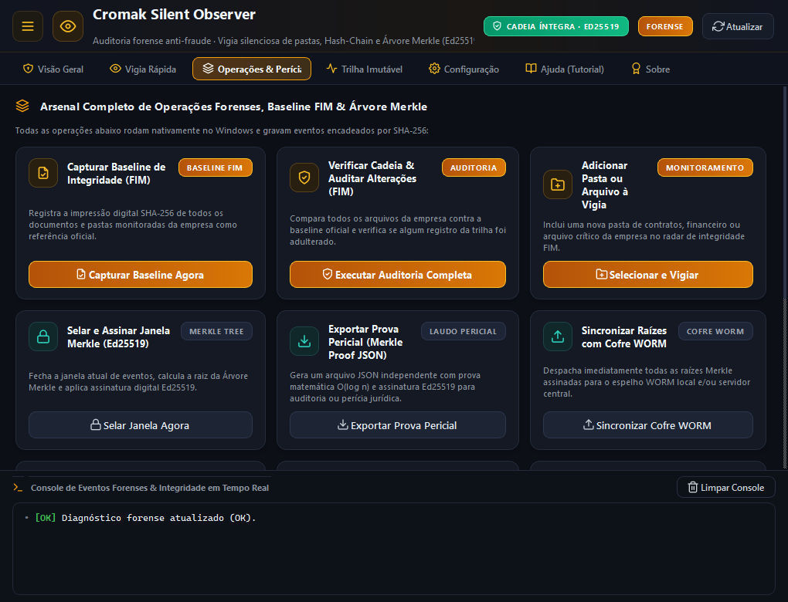
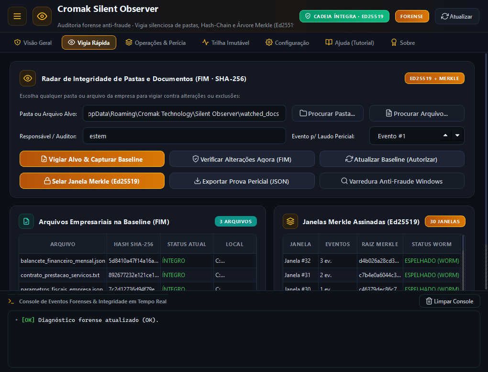
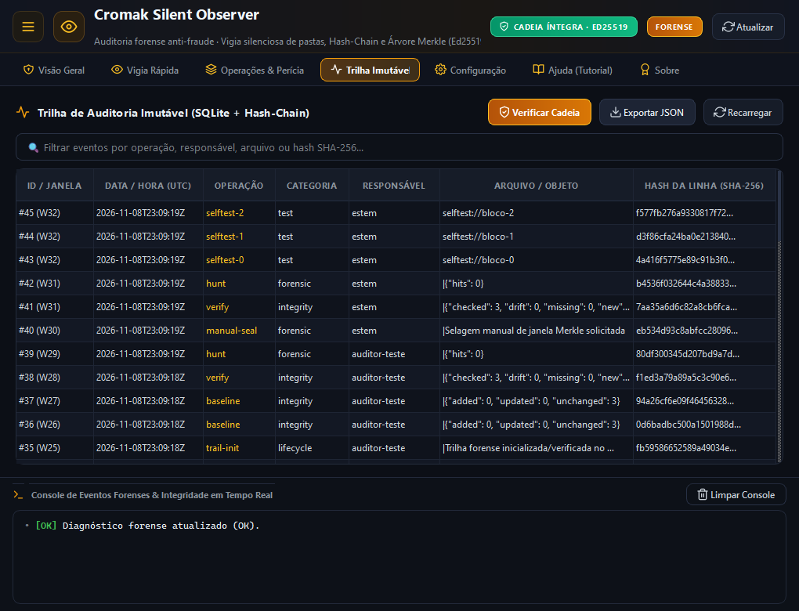
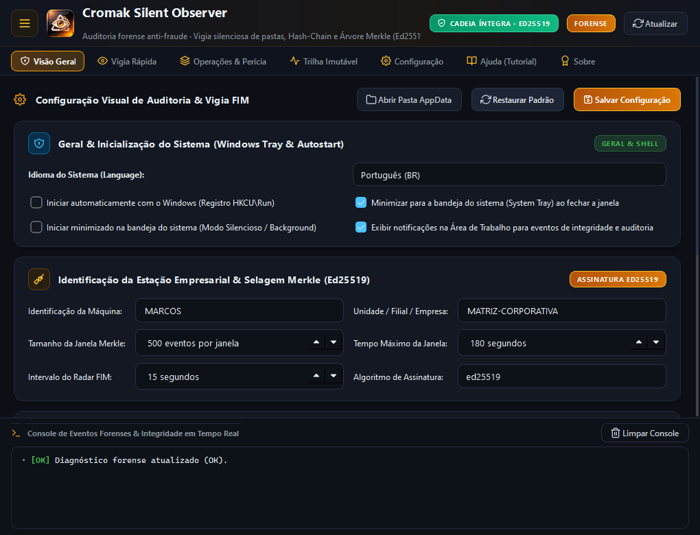
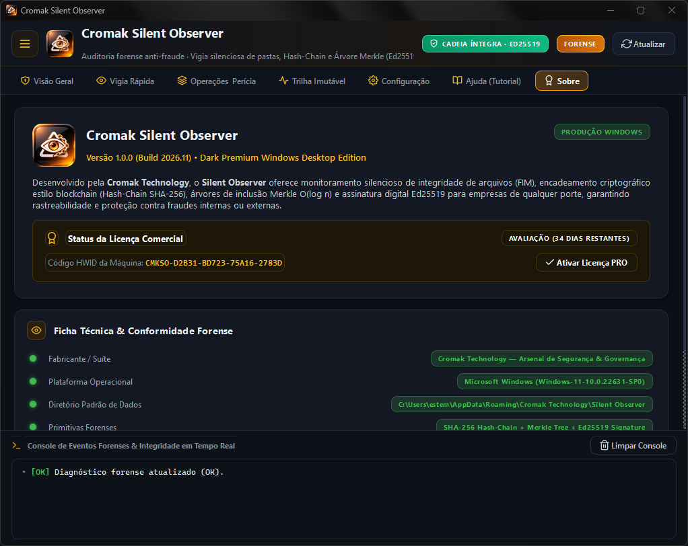

Cromak Silent Observer
Auditoria Forense Antifraude, Vigia de Pastas e Árvores de Merkle.
Versão: 1.0.0 (Build 2026.11)
A vigia invisível e incorruptível para seus dados corporativos. Detecta em frações de segundo qualquer criação, modificação, renomeação ou exclusão não autorizada em diretórios críticos de servidores e estações de trabalho, blindando os registros com encadeamento criptográfico SHA-256 e assinaturas Ed25519.
Detecção cirúrgica de adulterações: evidências matematicamente incontestáveis.
Antivírus tradicionais alertam apenas sobre malwares conhecidos, mas são cegos contra fraudes internas, colaboradores desleais alterando planilhas financeiras ou ransomwares silenciosos que começam cifrando arquivos aos poucos antes do resgate.
O Cromak Silent Observer atua na camada mais profunda do Windows com chamadas nativas de kernel (ReadDirectoryChangesW): impacto de 0% de uso contínuo de CPU, baseline fotográfico de diretórios, cálculo instantâneo de raízes de Merkle e assinatura assimétrica em curva elíptica Ed25519 que garante valor pericial definitivo aos logs.
Os 4 Pilares da Auditoria Forense Inviolável
-
Vigia Silenciosa de Pastas (FIM em Tempo Real)
Captura instantânea de eventos de sistema de arquivos via buffer assíncrono do Windows. Identifica modificações em arquivos de log, bancos de dados, executáveis e arquivos contábeis sem polling e sem lentidão no disco.
-
Cadeia Forense Hash-Chain & Merkle Tree
Cada evento registrado contém o hash SHA-256 do evento anterior. As alterações são agrupadas em árvores de Merkle, tornando impossível para qualquer invasor apagar ou modificar linhas do histórico sem quebrar a raiz matemática.
-
Assinaturas Digitais Assimétricas (Ed25519)
Selagem criptográfica de alto desempenho utilizando curvas elípticas Ed25519 (RFC 8032). Cada ciclo de baseline e relatório de auditoria é assinado digitalmente com par de chaves pública/privada para validade jurídica corporativa.
-
Heurística Antifraude & Alerta Anti-Ransomware
Monitora padrões de rajada de modificações, variações anômalas de entropia e trocas repentinas de extensão, permitindo conter ataques de sequestro de dados no primeiro arquivo afetado.
Explore a Interface
Clique nas imagens para expandir e conhecer os painéis de auditoria.

Dashboard & Status da Vigia
Visão geral do motor FIM, número de eventos catalogados, integridade da cadeia de blocos forense e atalhos rápidos de operação.

Catálogo de Operações & Chaves
Comandos para recalcular baselines SHA-256, assinar laudos com Ed25519, exportar árvores de Merkle e realizar verificações de sanidade.

Central Rápida (Quick Watch)
Assistente direto para cadastrar novas pastas monitoradas, ativar a vigia em tempo real e consultar o último laudo assinado.

Trilha Forense & Merkle Tree
Inspeção detalhada de cada registro encadeado por SHA-256 com timestamp em nanossegundos, caminho do arquivo e ator responsável.

Configurações & Filtros de Diretório
Definição de regras de inclusão/exclusão de extensões, limites de alerta contra rajadas e políticas de retenção de logs locais.

Ficha Técnica & Documentação
Acesso rápido com um clique aos documentos de EULA, Privacidade, Readme e Arquitetura técnica sem dependências externas.
Escolha a Licença Ideal para a sua Infraestrutura
Segurança forense para estações de trabalho, laboratórios e servidores.
Plano Grátis
- Vigia em Tempo Real de 1 Pasta Crítica
- Hash SHA-256 Básico por Arquivo
- Visualização de Eventos em Memória
- Assinatura Digital Ed25519 Bloqueada
- Sem Árvore de Merkle Imutável
- Sem Exportação de Laudo Forense JSON
Uso Pessoal PRO
- 1 Licença de Máquina (Vitalícia)
- Pastas Monitoradas Ilimitadas
- Assinatura Digital Ed25519 Nativa
- Árvores de Merkle & Cadeia SHA-256
- Alerta Heurístico Anti-Ransomware
- Exportação de Laudo Pericial JSON
Corporativo (B2B)
- Pacote p/ até 5 Estações/Servidores
- Ou R$ 499 (Vitalício p/ 10 Máquinas)
- Consolidação Centralizada de Laudos
- Políticas Customizadas de Compliance
- Suporte Pericial e Corporativo B2B
- Ideal para Escritórios Jurídicos e Servidores
Instaladores Multilíngues
O software detecta automaticamente o idioma do seu sistema operacional ou permite a troca instantânea na interface com tradução 100% nativa em 10 idiomas.
Requisitos do Sistema
Sistema Operacional
Windows 10 / 11 / Server (x64 Nativo)
Processador
Dual-Core (1.0 GHz ou superior)
Memória RAM
512 MB Livres (Impacto mínimo ~50 MB)
Armazenamento
40 MB de espaço livre em disco
Privilégios
Administrador (Requerido para ganchos de kernel)
Idiomas Suportados
10 Idiomas Nativos
Português, English, Español, Français, Deutsch, Italiano, Русский, 简体中文, 日本語, 한국어Perguntas Frequentes
O que é File Integrity Monitoring (FIM) e qual a diferença para um antivírus?
O antivírus reage a assinaturas conhecidas de vírus. O FIM (File Integrity Monitoring) atua na observação e integridade contínua do sistema de arquivos: ele detecta qualquer modificação, adição ou deleção de dados, seja provocada por um malware inédito, por um hacker que já obteve acesso à máquina ou por um operador interno adulterando registros contábeis.
Como as assinaturas Ed25519 e a árvore de Merkle impedem a adulteração do log?
Em sistemas comuns, um invasor experiente invade a máquina e apaga os arquivos de log para encobrir seus rastros. No Silent Observer, cada evento é criptograficamente encadeado ao anterior por SHA-256 e o bloco inteiro é selado com uma assinatura digital Ed25519. Se alguém alterar uma única vírgula ou apagar uma linha, a cadeia matemática se quebra e a tentativa de fraude é imediatamente denunciada.
O programa consome muito processamento ao vigiar milhares de arquivos?
Não. O Silent Observer não faz escaneamentos contínuos de disco (polling). Ele se registra nas notificações assíncronas do subsistema do Windows (ReadDirectoryChangesW), dormindo enquanto não há atividade e acordando instantaneamente apenas quando uma operação real de arquivo é executada pelo sistema operacional.